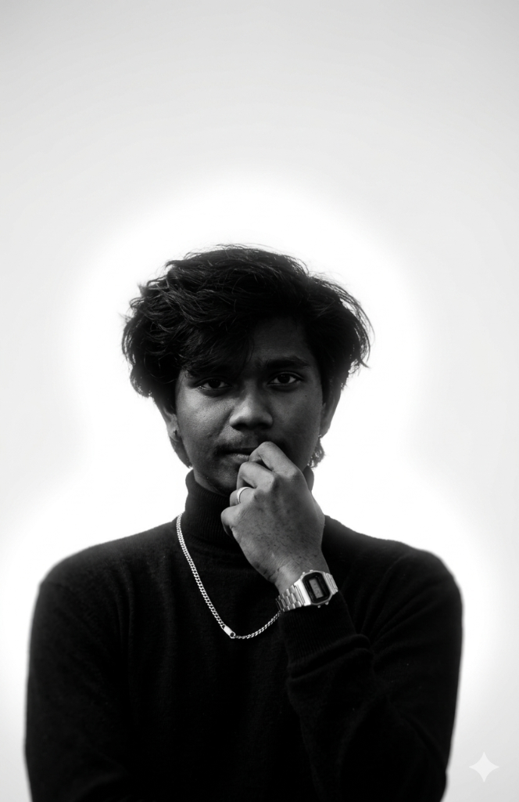

We guide every visual decision from start to finish, ensuring clarity, emotion, and impact across every touchpoint.
From strategy to execution, we shape consistent brand systems that speak clearly and feel uniquely ownable.
We use motion as a design tool — adding clarity, rhythm, and energy to digital experiences with intention.